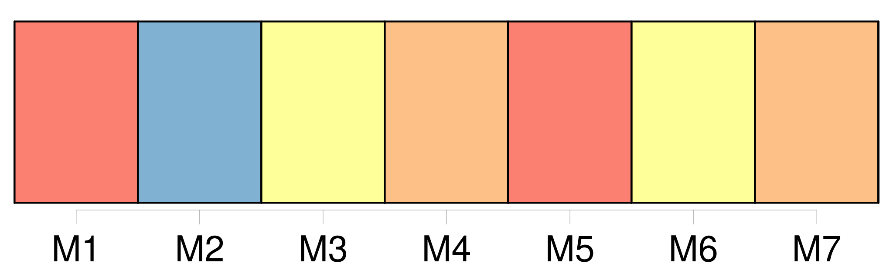
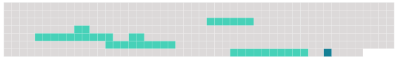

Longueur nb maillons : 7 mentions |
 |
Toute entité de pêche dont les navires ont pêché des stocks de poissons visés par la présente convention à un quelconque moment au cours des quatre ans ayant précédé l'adoption de la présente convention peut exprimer son engagement ferme à respecter les dispositions de la présente convention et à observer toute mesure de conservation et de gestion adoptée en vertu de celle -ci :
Le dépositaire fournit dans les meilleurs délais copie de [cette communication] à tous les signataires et parties. [1 phrases]
L'engagement exprimé conformément au paragraphe 1 du présent article prend effet à la date visée à l'article XXXI, paragraphe 1, de la présente convention, ou à la date de [la communication écrite visée au paragraphe 1 du présent article] , si [celle -ci] est postérieure. [1 phrases]
Toute entité de pêche susvisée peut exprimer son engagement ferme à respecter les dispositions de la présente convention si elle était amendée conformément à l'article XXXIV ou à l'article XXXV de la présente convention par le biais d' [une communication écrite adressée à cette fin au dépositaire] , conformément à la résolution visée au paragraphe 1 du présent article. [1 phrases]
L'engagement exprimé conformément au paragraphe 3 du présent article prend effet aux dates visées à l'article XXXIV, paragraphe 3, et à l'article XXXV, paragraphe 4, de la présente convention, ou à la date de [la communication écrite visée au paragraphe 3 du présent article] , si [celle] -ci est postérieure. |
 |
Il est possible de télécharger la ressource sur la page Ortolang |
Si vous avez des questions ou vous voyez des erreurs, merci d'envoyer un mail à silvia.federzoni89@gmail.com |